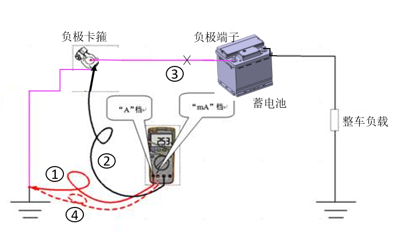

|
Тестируемое оборудование |
Высокоточный мультиметр (с диапазоном "mA") или устройство сбора данных, соединительные провода, зажимы. Для моделей с непостоянным током утечки (флуктуация среднего значения статического тока за 1 s составляет более 1 mA) частота дискретизации используемого устройства сбора данных должна быть в 5-10 раз выше частоты статического тока. |
|
Режим тестирования тока утечки |
|
|
Схема подключения для тестовых шагов  |
ВниманиеПри выполнении операций разблокировки, запирания и т. д. автомобилем необходимо замыкать красный и черный щупы мультиметра перемычкой. Для моделей с непостоянным током утечки (флуктуация среднего значения тока утечки за 1 s превышает 1 mA) для сбора тока утечки следует использовать устройство сбора данных. |